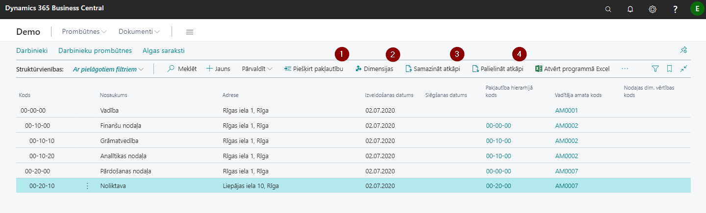
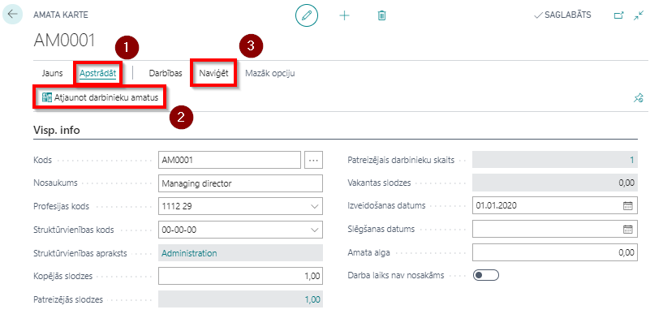
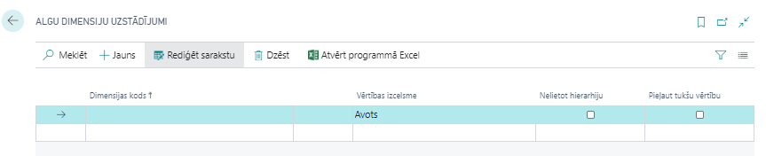

Uzņēmuma uzstādījumi
Lai varētu sākt ērti, bez aizķeršanās vadīt datus darbinieka kartiņā, ir ieteicams sākotnēji veikt zemāk uzskaitītos uzstādījumus, kas būs nepieciešami darbinieku kartiņas lauku aizpildīšanai:
- jāizveido uzņēmuma struktūrvienības;
- jāizveido darbinieku amatu saraksts;
- jānosaka algu dimensijas;
- jāuzstāda darba laika kalendāri, saskaņā ar ko strādās darbinieki
Struktūrvienības
Sistēmā iespējams uzturēt strukturētu informāciju par uzņēmuma struktūrvienībām. Informācija būs gan aktuālā, gan arī vēsturiskā, jo struktūrvienības sistēmā netiek dzēstas, bet gan slēgtas.
Lai nodrošinātu struktūrvienību hierarhiju, tiek kombinētas kārtošanas un atkāpju metodes. Tātad viena struktūrvienība ir pakļauta otrai struktūrvienībai, ja tā atrodas pēc galvenās struktūrvienības un ir ar vienu līmeni lielāku atkāpi. Atkarībā no struktūrvienību atkāpju dziļuma un struktūrvienību skaita, sastāda struktūrvienības kodu. Struktūrvienības atkāpes tiek veidotas ar funkciju  ,
,  un
un  palīdzību Struktūrvienības rīkjoslā.
palīdzību Struktūrvienības rīkjoslā.
Struktūrvienībām var piesaistīt dimensijas, klikšķinot uz pogas Dimensijas ( )
)

| Lauka nosaukums | Apraksts |
|---|---|
| Kods | Struktūrvienības kods, ko definē lietotājs. |
| Nosaukums | Struktūrvienības nosaukums. |
| Adrese | Adrese, kur atdodas struktūrvienība. |
| Izveidošanas datums | Datums, kad struktūrvienība ir izveidota. |
| Slēgšanas datums | Datums, kad struktūrvienība ir slēgta. |
| Pakļautība hierarhijā kods | Struktūrvienības kods, kurai struktūrvienība ir pakļauta. |
| Vadītāja amata kods | Atbilstošais vadītājā amata kods no saraksta Amati. |
| Dimensijas vērtības kods | Struktūrvienības dimensijas vērtības kods no standarta algu dimensiju klasifikatora. |
Amati
Visi uzņēmumā lietotie amati tiek apkopoti sarakstā Amati. Katram amatam ir jāizveido atsevišķa Amata kartiņa.
Ja sistēmā tiek labota informācija par profesijas kodu un struktūrvienības kodu, tad, lai šīs izmaiņas parādītos arī darbinieka kartiņā, amata kartē ir jāaktivizē funkcija Atjaunot darbinieku amatus, klikšķinot uz Apstrādāt () un Atjaunot darbinieku amatus ().
Amata kartiņai var piesaistīt dimensijas, klikšķinot uz Naviģēt () un izvēloties funkciju Dimensijas.

| Lauka nosaukums | Apraksts |
|---|---|
| Kods | Jaunās amata vietas kods. |
| Nosaukums | Amata nosaukums. |
| Profesijas kods | Kods no Darbinieku statistikas grupas. |
| Struktūrvienības kods | Kods no Struktūrvienības saraksta. |
| Struktūrvienības apraksts | Apraksts no Struktūrvienības saraksta. |
| Kopējās slodzes | Slodzes, kas ir paredzētas šim amatam kopā. |
| Patreizējās slodzes | Cik amata slodzes uzņēmumā jau ir aizņemtas. |
| Patreizējais darbinieku skaits | Darbinieku skaits, kas ir nodarbināti konkrētā amatā. |
| Vakantās slodzes | Cik slodzes vēl ir vakantas šim amatam. |
| Izveidošanas datums | Amata izveidošanas datums. |
| Slēgšanas datums | Amata slēgšanas datums. |
| Amata alga | Informatīvs lauks. |
| Darba laiks nav nosakāms | Atzīmē, ja amatam darba laiks nav nosakāms un tiek pakārtots uzņēmuma vajadzībām. |
Algu dimensiju uzstādījumi
Šīs funkcionalitātes izmantošana nav obligāta sekmīgas sistēmas darbības nodrošināšanai.
Algu dimensiju uzstādījumos norāda tās dimensijas, kuras tiks izmantotas algu aprēķinus. Pārējās sistēmā pieejamās dimensijas tiks ignorētas.

| Lauka nosaukums | Apraksts |
|---|---|
| Dimensijas kods | Izvēlas dimensiju no saraksta, kura tiks lietota algas aprēķinos. |
| Vērtības izcelsme | Norāda līmeni, no kurienes tiks ņemta dimensijas vērtība: a) Avots – Prombūtnes reģistrācija, Darba algas komponentes, Algas komponenšu reģistrs; b) Algas komponente – Norādītais dimensijas kods tiek ņemts no algas komponentes; c) Darbinieka amats – Norādītais dimensijas kods tiek ņemts no Darbinieku amata; d) Darbinieks – Augstākais līmenis, norādītais dimensijas kods tiek ņemts no darbinieka kartes. |
| Nelietot hierarhiju | Ja nav atzīme šajā laukā, tad norādītais dimensijas kods tiek meklēts augstākos līmeņos. Ja ir atzīme, tad tikai izvēlētajā līmenī. |
| Pieļaut tukšu vērtību | Pārbauda, vai pēc iepriekš norādītajiem uzstādījumiem dimensijas vērtība nav tukša vērtība. Ja ir atzīme šajā laukā, tad programma nedod kļūdas paziņojumu, ja nevienā no līmeņiem (konkrētā līmenī, ja ir atzīme laukā nelietot hierarhiju) dimensija nav atrasta. |
Sistēma piedāvā iespēju pievienot pie struktūrvienības, amata n-tās dimensijas. Ja pie struktūrvienības norāda dimensiju vērtības un pie attiecīgās struktūrvienības amata norāda vēl citu dimensiju vērtības, tad pie darbinieka amata parāda visas (gan tās, kas bija norādītas pie struktūrvienības, gan tās, kas bija norādītas pie amata).
Tip
Nav ieteicams norādīt vienas un tās pašas dimensijas, bet ar atšķirīgām vērtībām gan pie struktūrvienības, gan amata.